Rettangoli Tratteggiati o PuntoLinea
Dopo aver disegnato il rettangolo e' possibile renderlo tratteggiato cambiando lo stile.
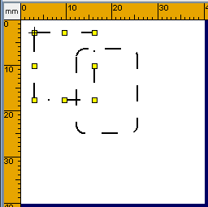
Premere sul tasto
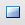
Rettangolo o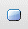
Rettangolo arrotondato e poi posizionare il mouse sull'area di lavoro. Serviranno due clic uno per il punto iniziale e uno per il punto finale. Entrambi i clic sono fatti con il tasto sinistro del mouse. Non e' necessario tenere premuto il mouse fra i due clic. Anche se si tiene premuto il mouse il rettangolo viene disegnato, ma e' piu' semplice disegnarlo spostando il mouse e non trascinandolo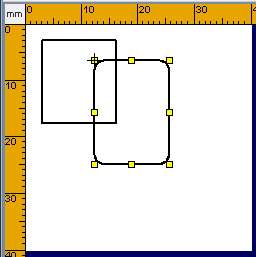
.Dopo aver disegnato il rettangolo e' possibile modificarlo posizionandosi con il mouse su uno dei marker premendo e trascinando.
Rettangoli Tratteggiati o PuntoLineaDopo aver disegnato il rettangolo e' possibile renderlo tratteggiato cambiando lo stile.  |
E' inoltre possibile modificare la scala del tratteggio per ottenere l'effetto desiderato
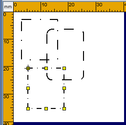 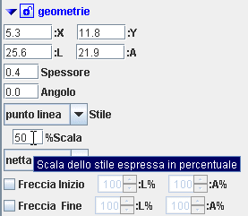 |
Rettangoli con spigoli Arrotondati, Smussati, Squadrati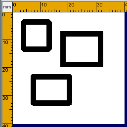 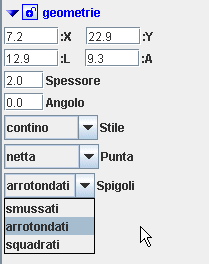 |
Rettangoli PieniPer disegnare un rettangolo pieno e' sufficiente cambiare il "Colore Riempimento" da Nessuno a Nero. 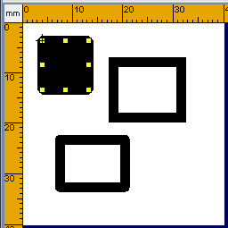 |
E possibile usare qualunque colore anche diverso dal "Colore Contorno".
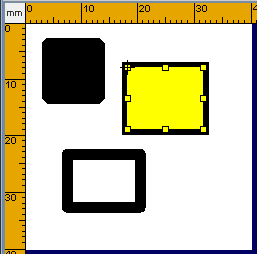 
|
Il Gradiente nei rettangoliConsente di ottenere degli effetti molto accattivanti per far risaltare delle notizie importanti o per dare un tocco grafico diverso. Per usare il gradiente bisogna selezionarlo fra la lista dei colori.
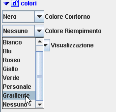 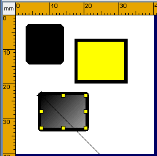 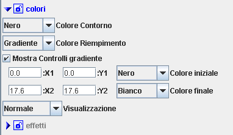 |
Poi potremo cambiare il colore iniziale e quello finale
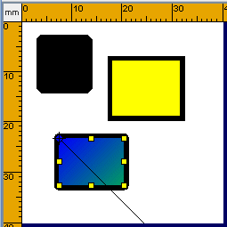 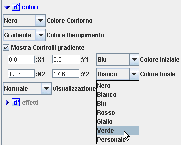 |
Spostando X1,Y1 o X2,Y2 si ottengono le sfumature diverse. I punti X1,Y1 e Y1,Y2 sono i Controlli del gradiente. Tali punti si possono spostare digitando nuovo valore nella finestra relativa oppure spostandoli con il mouse.
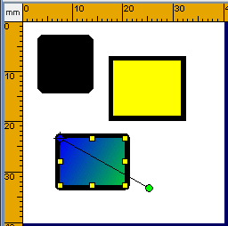 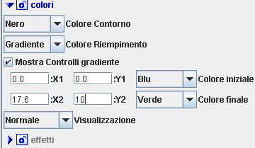 |
Se si intende spostare i Controlli del gradiente con il mouse bisogna posizionarsi con il puntatore del mouse su uno dei controlli fino a quando il puntatore si trasforma in
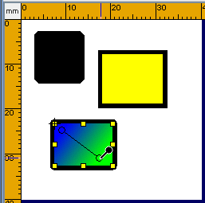 |
Il Gradiente puo' essere applicato anche al Contorno.